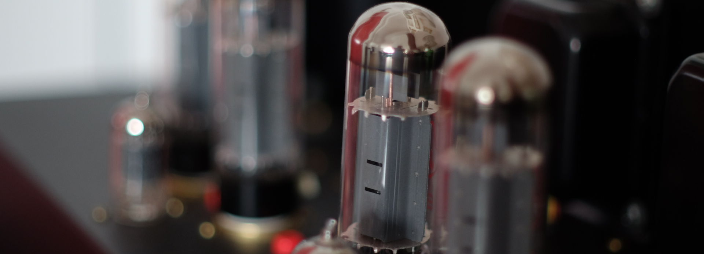
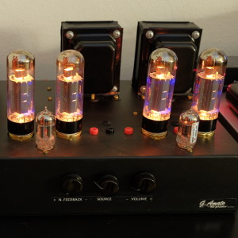
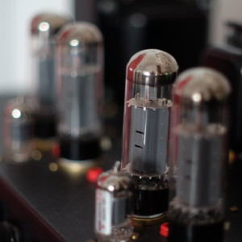
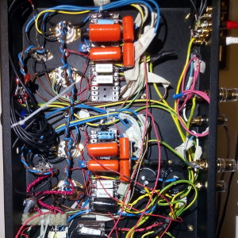

Il Primo
DIY - Vacuum Tube Amplifier by Giuseppe Amato

  
Characteristics:
- Push-Pull stereo integrated amplifier
- Max Output Power 2x ~30W
- @ 1 Volt peak input signal, with 6dB global negative
feedback
- @ 0.5 Volt peak input signal, with no negative
feedback
- Power Stage: 2x 2 EL34/6CA7 power vacuum tubes in Push-Pull
Ultra-Linear configuration and fixed bias
- Phase Split Stage: DC coupled Concertina with 12AX7 vacuum
tubes
- Input Stage: 12AX7 vacuum tubes with self bias and bypass
capacitor
- Class AB with 40 mA anode current bias
- Output Transformer: Custom
- Primary: 7.6K Ohm C.T., 40% screen tap
- Secondary: 4, 8, 16 Ohm
- Power Supply Unit Transformer: Custom 650V C.T. @400mA
- Global Negative Feedback: max 6dB adjustable
- THD at 1W: 0.05%
- THD at 5W: 0.08%
- THD at 10W: 0.24%
- Two only capacitors in the signal path
- 4, 8, 16 Ohm Speakers
- Input Impedance: 100K Ohm
- 6 selectable input sources
Giuseppe Amato
e-mail: giuseppe.amato-1968@libero.it